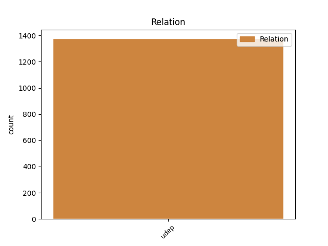
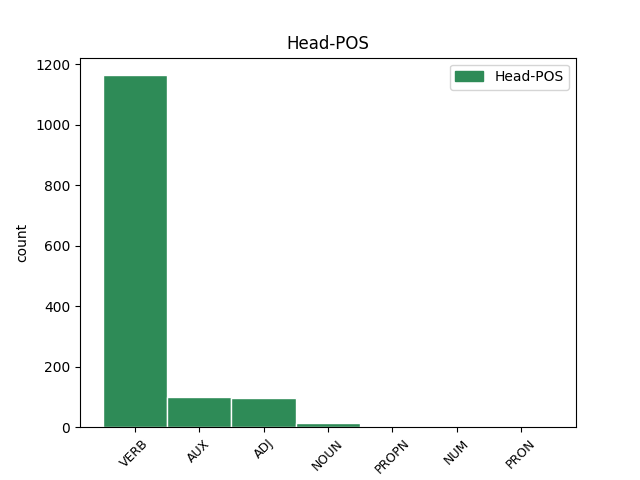
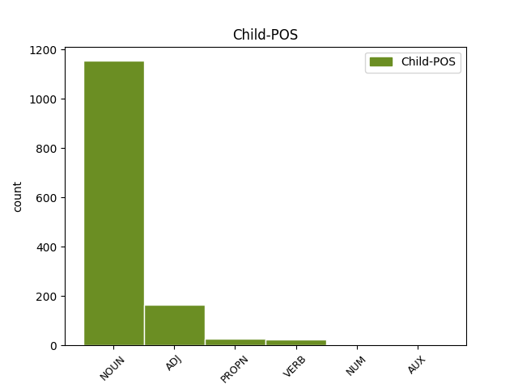

Distribution of features within this leaf



Agreement Rules sorted by frequency.
- When the dependent token is the underspecified dependency(udep) of the head token, and the dependent token is NOUN.
1 μακάριοι _ _ _ _ 0 _ _ _
2 οἱ _ _ _ _ 0 _ _ _
3 πλύνοντες _ _ _ _ 0 _ _ _
4 τὰς _ _ _ _ 0 _ _ _
5 στολὰς _ _ _ _ 0 _ _ _
6 αὐτῶν _ _ _ _ 0 _ _ _
7 ἵνα _ _ _ _ 0 _ _ _
8 ἔσται _ _ _ _ 0 _ _ _
9 ἡ _ _ _ _ 0 _ _ _
10 ἐξουσία _ _ _ _ 0 _ _ _
11 αὐτῶν _ _ _ _ 0 _ _ _
12 ἐπὶ _ _ _ _ 0 _ _ _
13 τὸ _ _ _ _ 0 _ _ _
14 ξύλον _ _ _ _ 0 _ _ _
15 τῆς _ _ _ _ 0 _ _ _
16 ζωῆς _ _ _ _ 0 _ _ _
17 καὶ _ _ _ _ 0 _ _ _
18 τοῖς _ _ _ _ 0 _ _ _
19 πυλῶσιν πυλών NOUN Nb Case=Dat|Gender=Masc|Number=Plur 20 udep _ ref=REV_22.14
20 εἰσέλθωσιν εἰσέρχομαι VERB V- Aspect=Perf|Mood=Sub|Number=Plur|Person=3|Tense=Past|VerbForm=Fin|Voice=Act 0 _ _ _
21 εἰς _ _ _ _ 0 _ _ _
22 τὴν _ _ _ _ 0 _ _ _
23 πόλιν _ _ _ _ 0 _ _ _
1 Ἀθέτησις _ _ _ _ 0 _ _ _
2 μὲν _ _ _ _ 0 _ _ _
3 γὰρ _ _ _ _ 0 _ _ _
4 γίνεται _ _ _ _ 0 _ _ _
5 προαγούσης _ _ _ _ 0 _ _ _
6 ἐντολῆς _ _ _ _ 0 _ _ _
7 διὰ _ _ _ _ 0 _ _ _
8 τὸ _ _ _ _ 0 _ _ _
9 αὐτῆς _ _ _ _ 0 _ _ _
10 ἀσθενὲς _ _ _ _ 0 _ _ _
11 καὶ _ _ _ _ 0 _ _ _
12 ἀνωφελές _ _ _ _ 0 _ _ _
13 οὐδὲν οὐδείς ADJ Px Case=Acc|Gender=Neut|Number=Sing 15 udep _ ref=HEB_7.19
14 γὰρ _ _ _ _ 0 _ _ _
15 ἐτελείωσεν τελειόω VERB V- Aspect=Perf|Mood=Ind|Number=Sing|Person=3|Tense=Past|VerbForm=Fin|Voice=Act 0 _ _ _
16 ὁ _ _ _ _ 0 _ _ _
17 νόμος _ _ _ _ 0 _ _ _
18 ἐπεισαγωγὴ _ _ _ _ 0 _ _ _
19 δὲ _ _ _ _ 0 _ _ _
20 κρείττονος _ _ _ _ 0 _ _ _
21 ἐλπίδος _ _ _ _ 0 _ _ _
22 δι’ _ _ _ _ 0 _ _ _
23 ἧς _ _ _ _ 0 _ _ _
24 ἐγγίζομεν _ _ _ _ 0 _ _ _
25 τῷ _ _ _ _ 0 _ _ _
26 θεῷ _ _ _ _ 0 _ _ _
1 οὐδεὶς _ _ _ _ 0 _ _ _
2 γάρ _ _ _ _ 0 _ _ _
3 ποτε _ _ _ _ 0 _ _ _
4 τὴν _ _ _ _ 0 _ _ _
5 ἑαυτοῦ _ _ _ _ 0 _ _ _
6 σάρκα _ _ _ _ 0 _ _ _
7 ἐμίσησεν _ _ _ _ 0 _ _ _
8 ἀλλὰ _ _ _ _ 0 _ _ _
9 ἐκτρέφει _ _ _ _ 0 _ _ _
10 καὶ _ _ _ _ 0 _ _ _
11 θάλπει θάλπω VERB V- Mood=Ind|Number=Sing|Person=3|Tense=Pres|VerbForm=Fin|Voice=Act 0 _ _ _
12 αὐτήν _ _ _ _ 0 _ _ _
13 καθὼς _ _ _ _ 0 _ _ _
14 καὶ _ _ _ _ 0 _ _ _
15 ὁ _ _ _ _ 0 _ _ _
16 Χριστὸς Χριστός PROPN Ne Case=Nom|Gender=Masc|Number=Sing 11 udep _ ref=EPH_5.29
17 τὴν _ _ _ _ 0 _ _ _
18 ἐκκλησίαν _ _ _ _ 0 _ _ _
19 ὅτι _ _ _ _ 0 _ _ _
20 μέλη _ _ _ _ 0 _ _ _
21 ἐσμὲν _ _ _ _ 0 _ _ _
22 τοῦ _ _ _ _ 0 _ _ _
23 σώματος _ _ _ _ 0 _ _ _
24 αὐτοῦ _ _ _ _ 0 _ _ _
1 ἡ _ _ _ _ 0 _ _ _
2 γὰρ _ _ _ _ 0 _ _ _
3 κρίσις _ _ _ _ 0 _ _ _
4 ἀνέλεος ἀνέλεος ADJ A- Case=Nom|Degree=Pos|Gender=Fem|Number=Sing 0 _ _ _
5 τῷ _ _ _ _ 0 _ _ _
6 μὴ _ _ _ _ 0 _ _ _
7 ποιήσαντι ποιέω VERB V- Aspect=Perf|Case=Dat|Gender=Masc|Number=Sing|Tense=Past|VerbForm=Part|Voice=Act 4 udep _ ref=JAS_2.13
8 ἔλεος _ _ _ _ 0 _ _ _
1 Τῇ _ _ _ _ 0 _ _ _
2 δὲ _ _ _ _ 0 _ _ _
3 μιᾷ εἷς NUM Ma Case=Dat|Gender=Fem|Number=Sing 9 udep _ ref=JOHN_20.1
4 τῶν _ _ _ _ 0 _ _ _
5 σαββάτων _ _ _ _ 0 _ _ _
6 Μαρίαμ _ _ _ _ 0 _ _ _
7 ἡ _ _ _ _ 0 _ _ _
8 Μαγδαληνὴ _ _ _ _ 0 _ _ _
9 ἔρχεται ἔρχομαι VERB V- Mood=Ind|Number=Sing|Person=3|Tense=Pres|VerbForm=Fin|Voice=Mid 0 _ _ _
10 πρωῒ _ _ _ _ 0 _ _ _
11 σκοτίας _ _ _ _ 0 _ _ _
12 ἔτι _ _ _ _ 0 _ _ _
13 οὔσης _ _ _ _ 0 _ _ _
14 εἰς _ _ _ _ 0 _ _ _
15 τὸ _ _ _ _ 0 _ _ _
16 μνημεῖον _ _ _ _ 0 _ _ _
17 καὶ _ _ _ _ 0 _ _ _
18 βλέπει _ _ _ _ 0 _ _ _
19 τὸν _ _ _ _ 0 _ _ _
20 λίθον _ _ _ _ 0 _ _ _
21 ἠρμένον _ _ _ _ 0 _ _ _
22 ἐκ _ _ _ _ 0 _ _ _
23 τοῦ _ _ _ _ 0 _ _ _
24 μνημείου _ _ _ _ 0 _ _ _
1 λέγω λέγω VERB V- Mood=Ind|Number=Sing|Person=1|Tense=Pres|VerbForm=Fin|Voice=Act 0 _ _ _
2 γὰρ _ _ _ _ 0 _ _ _
3 διὰ _ _ _ _ 0 _ _ _
4 τῆς _ _ _ _ 0 _ _ _
5 χάριτος _ _ _ _ 0 _ _ _
6 τῆς _ _ _ _ 0 _ _ _
7 δοθείσης _ _ _ _ 0 _ _ _
8 μοι _ _ _ _ 0 _ _ _
9 παντὶ _ _ _ _ 0 _ _ _
10 τῷ _ _ _ _ 0 _ _ _
11 ὄντι εἰμί AUX V- Case=Dat|Gender=Masc|Number=Sing|Tense=Pres|VerbForm=Part|Voice=Act 1 udep _ LId=1|ref=ROM_12.3
12 ἐν _ _ _ _ 0 _ _ _
13 ὑμῖν _ _ _ _ 0 _ _ _
14 μὴ _ _ _ _ 0 _ _ _
15 ὑπερφρονεῖν _ _ _ _ 0 _ _ _
16 παρ’ _ _ _ _ 0 _ _ _
17 ὃ _ _ _ _ 0 _ _ _
18 δεῖ _ _ _ _ 0 _ _ _
19 φρονεῖν _ _ _ _ 0 _ _ _
20 ἀλλὰ _ _ _ _ 0 _ _ _
21 φρονεῖν _ _ _ _ 0 _ _ _
22 εἰς _ _ _ _ 0 _ _ _
23 τὸ _ _ _ _ 0 _ _ _
24 σωφρονεῖν _ _ _ _ 0 _ _ _
25 ἑκάστῳ _ _ _ _ 0 _ _ _
26 ὡς _ _ _ _ 0 _ _ _
27 ὁ _ _ _ _ 0 _ _ _
28 θεὸς _ _ _ _ 0 _ _ _
29 ἐμέρισεν _ _ _ _ 0 _ _ _
30 μέτρον _ _ _ _ 0 _ _ _
31 πίστεως _ _ _ _ 0 _ _ _
Disagree Examples:
1 καταπλώσαντας καταπλέω VERB V- Aspect=Perf|Case=Acc|Gender=Masc|Number=Plur|Tense=Past|VerbForm=Part|Voice=Act 0 _ _ _
2 γὰρ _ _ _ _ 0 _ _ _
3 μακρῇ _ _ _ _ 0 _ _ _
4 νηί ναῦς NOUN Nb Case=Dat|Gender=Fem|Number=Sing 1 udep _ ref=1.2.2
5 ἐς _ _ _ _ 0 _ _ _
6 Αἶαν _ _ _ _ 0 _ _ _
7 τε _ _ _ _ 0 _ _ _
8 τὴν _ _ _ _ 0 _ _ _
9 Κολχίδα _ _ _ _ 0 _ _ _
10 καὶ _ _ _ _ 0 _ _ _
11 ἐπὶ _ _ _ _ 0 _ _ _
12 Φᾶσιν _ _ _ _ 0 _ _ _
13 ποταμόν _ _ _ _ 0 _ _ _
14 ἐνθεῦτεν _ _ _ _ 0 _ _ _
15 διαπρηξαμένους _ _ _ _ 0 _ _ _
16 καὶ _ _ _ _ 0 _ _ _
17 τὰ _ _ _ _ 0 _ _ _
18 ἄλλα _ _ _ _ 0 _ _ _
19 τῶν _ _ _ _ 0 _ _ _
20 εἵνεκεν _ _ _ _ 0 _ _ _
21 ἀπίκατο _ _ _ _ 0 _ _ _
22 ἁρπάσαι _ _ _ _ 0 _ _ _
23 τοῦ _ _ _ _ 0 _ _ _
24 βασιλέος _ _ _ _ 0 _ _ _
25 τὴν _ _ _ _ 0 _ _ _
26 θυγατέρα _ _ _ _ 0 _ _ _
27 Μηδείην _ _ _ _ 0 _ _ _
1 ὃ _ _ _ _ 0 _ _ _
2 δ’ _ _ _ _ 0 _ _ _
3 ἀμείβετο ἀμείβω VERB V- Aspect=Imp|Mood=Ind|Number=Sing|Person=3|Tense=Past|VerbForm=Fin|Voice=Mid 0 _ _ _
4 τοῖσιδε ὅδε ADJ Pd Case=Dat|Gender=Neut|Number=Plur 3 udep _ ref=1.9.1
1 μετὰ _ _ _ _ 0 _ _ _
2 δὲ _ _ _ _ 0 _ _ _
3 ἡμέρῃ ἡμέρα NOUN Nb Case=Dat|Gender=Fem|Number=Sing 12 udep _ ref=1.30.1
4 τρίτῃ _ _ _ _ 0 _ _ _
5 ἢ _ _ _ _ 0 _ _ _
6 τετάρτῃ _ _ _ _ 0 _ _ _
7 κελεύσαντος _ _ _ _ 0 _ _ _
8 Κροίσου _ _ _ _ 0 _ _ _
9 τὸν _ _ _ _ 0 _ _ _
10 Σόλωνα _ _ _ _ 0 _ _ _
11 θεράποντες _ _ _ _ 0 _ _ _
12 περιῆγον περιάγω VERB V- Aspect=Imp|Mood=Ind|Number=Plur|Person=3|Tense=Past|VerbForm=Fin|Voice=Act 0 _ _ _
13 κατὰ _ _ _ _ 0 _ _ _
14 τοὺς _ _ _ _ 0 _ _ _
15 θησαυρούς _ _ _ _ 0 _ _ _
16 καὶ _ _ _ _ 0 _ _ _
17 ἐπεδείκνυσαν _ _ _ _ 0 _ _ _
18 πάντα _ _ _ _ 0 _ _ _
19 ἐόντα _ _ _ _ 0 _ _ _
20 μεγάλα _ _ _ _ 0 _ _ _
21 τε _ _ _ _ 0 _ _ _
22 καὶ _ _ _ _ 0 _ _ _
23 ὄλβια _ _ _ _ 0 _ _ _
1 τούτοισι _ _ _ _ 0 _ _ _
2 γὰρ _ _ _ _ 0 _ _ _
3 ἐοῦσι _ _ _ _ 0 _ _ _
4 γένος γένος NOUN Nb Case=Acc|Gender=Neut|Number=Sing 5 udep _ ref=1.31.2
5 Ἀργείοισι Ἀργεῖος ADJ A- Case=Dat|Degree=Pos|Gender=Masc|Number=Plur 0 _ _ _
6 βίος _ _ _ _ 0 _ _ _
7 τε _ _ _ _ 0 _ _ _
8 ἀρκέων _ _ _ _ 0 _ _ _
9 ὑπῆν _ _ _ _ 0 _ _ _
10 καὶ _ _ _ _ 0 _ _ _
11 πρὸς _ _ _ _ 0 _ _ _
12 τούτῳ _ _ _ _ 0 _ _ _
13 ῥώμη _ _ _ _ 0 _ _ _
14 σώματος _ _ _ _ 0 _ _ _
15 τοιήδε _ _ _ _ 0 _ _ _
1 ἐκκληιόμενοι ἐκκλείω VERB V- Case=Nom|Gender=Masc|Number=Plur|Tense=Pres|VerbForm=Part|Voice=Mid 0 _ _ _
2 δὲ _ _ _ _ 0 _ _ _
3 τῇ _ _ _ _ 0 _ _ _
4 ὥρῃ ὥρα NOUN Nb Case=Dat|Gender=Fem|Number=Sing 1 udep _ ref=1.31.2
5 οἱ _ _ _ _ 0 _ _ _
6 νεηνίαι _ _ _ _ 0 _ _ _
7 ὑποδύντες _ _ _ _ 0 _ _ _
8 αὐτοὶ _ _ _ _ 0 _ _ _
9 ὑπὸ _ _ _ _ 0 _ _ _
10 τὴν _ _ _ _ 0 _ _ _
11 ζεύγλην _ _ _ _ 0 _ _ _
12 εἷλκον _ _ _ _ 0 _ _ _
13 τὴν _ _ _ _ 0 _ _ _
14 ἅμαξαν _ _ _ _ 0 _ _ _